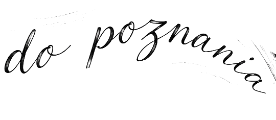
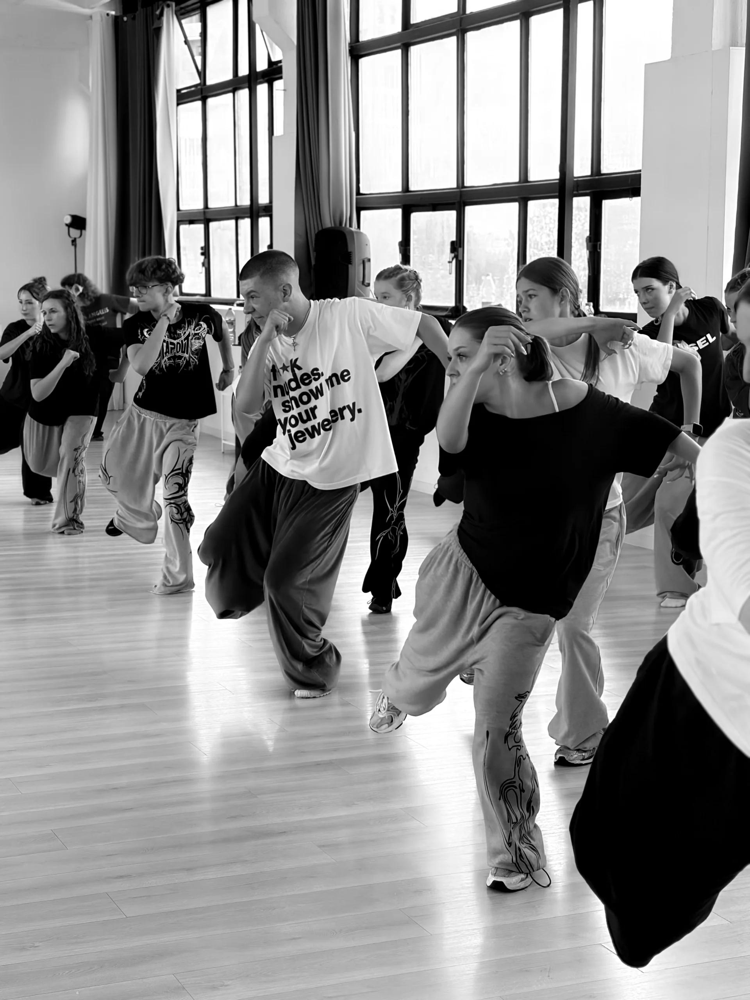
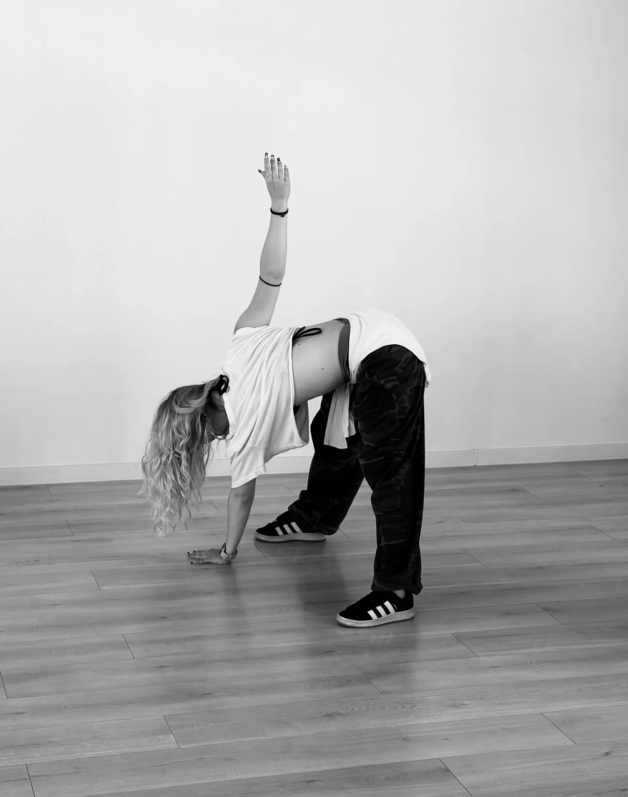
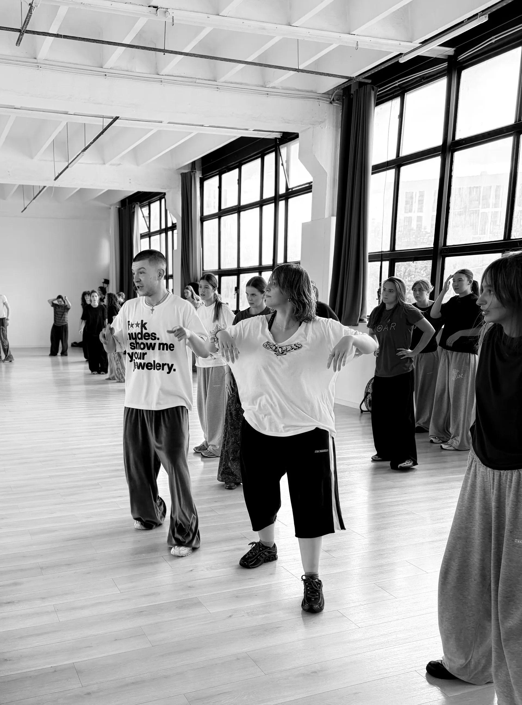

O projekcie
DO POZNANIA powstało z przekonania, że taniec to coś znacznie większego niż ruch. To przestrzeń do wyrażania siebie, odkrywania własnych możliwości i budowania relacji, które zaczynają się od wspólnej pasji.

DO POZNANIA powstało z przekonania, że taniec to coś znacznie większego niż ruch. To przestrzeń do wyrażania siebie, odkrywania własnych możliwości i budowania relacji, które zaczynają się od wspólnej pasji.



Tworzymy miejsce, w którym spotykają się różne osobowości, doświadczenia i spojrzenia na taniec. Zapraszamy nauczycieli, którzy poprzez swój indywidualny styl, wiedzę i wrażliwość wnoszą do projektu coś niepowtarzalnego.
Naszą ideą jest tworzenie kameralnych doświadczeń, w których liczy się nie tylko to, czego możesz się nauczyć, ale również to, co możesz poczuć, odkryć i zabrać ze sobą.
Wierzymy w wartość wymiany. W inspirację, która rodzi się ze spotkań. W rozwój, który nie ma jednego kierunku ani określonego końca.
DO POZNANIA to zaproszenie do wyjścia poza znane schematy. Do bycia częścią społeczności, która wzajemnie się inspiruje, wspiera i motywuje do poszukiwania własnej drogi.